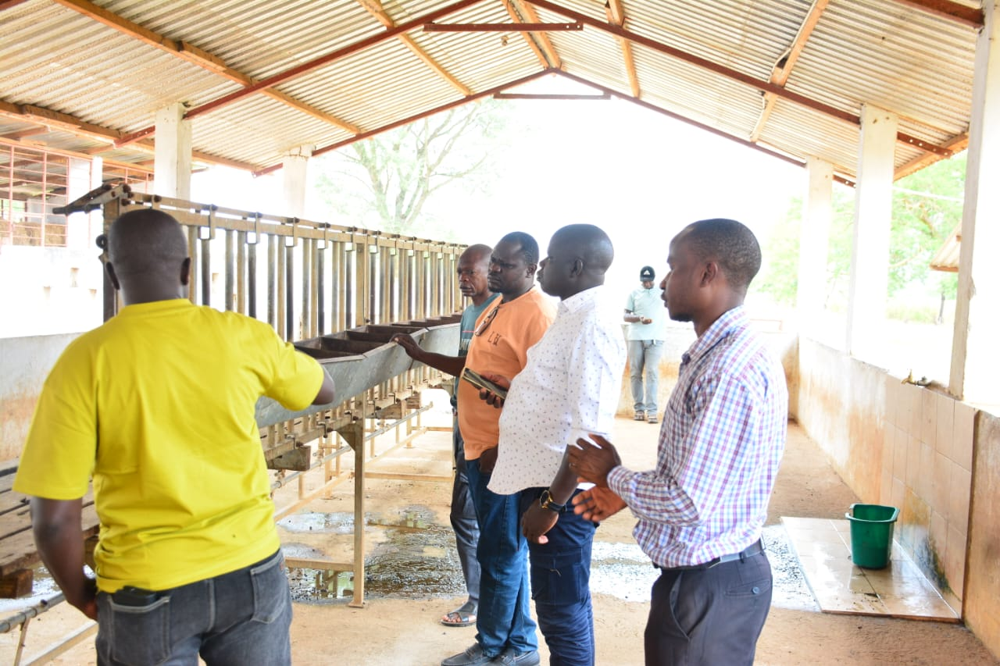
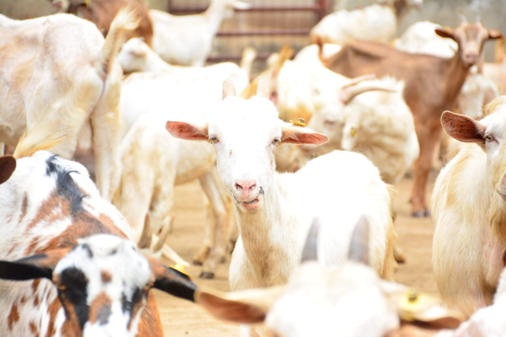
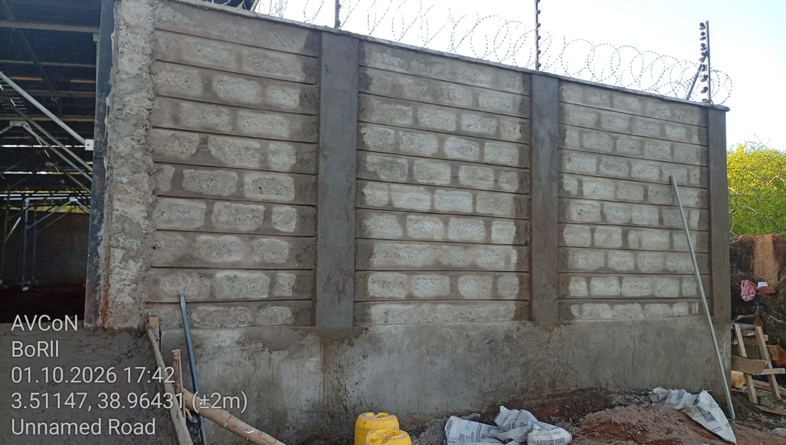
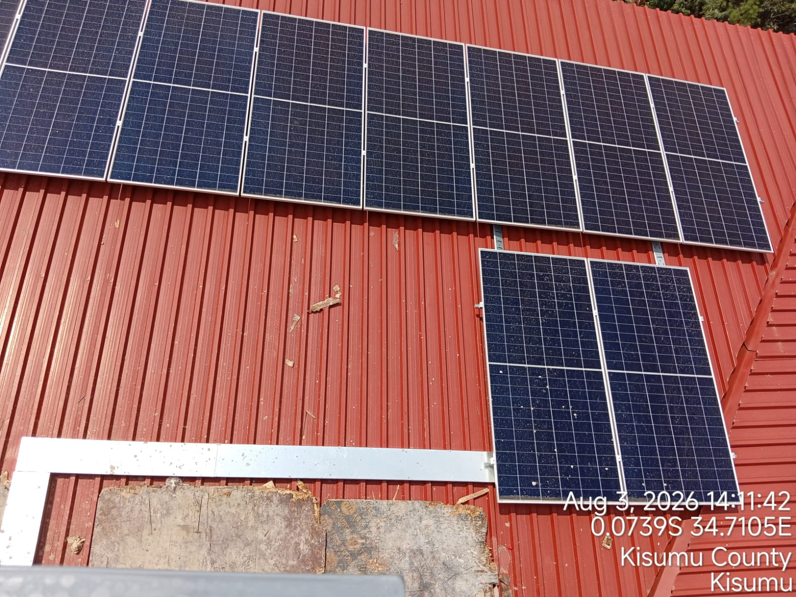
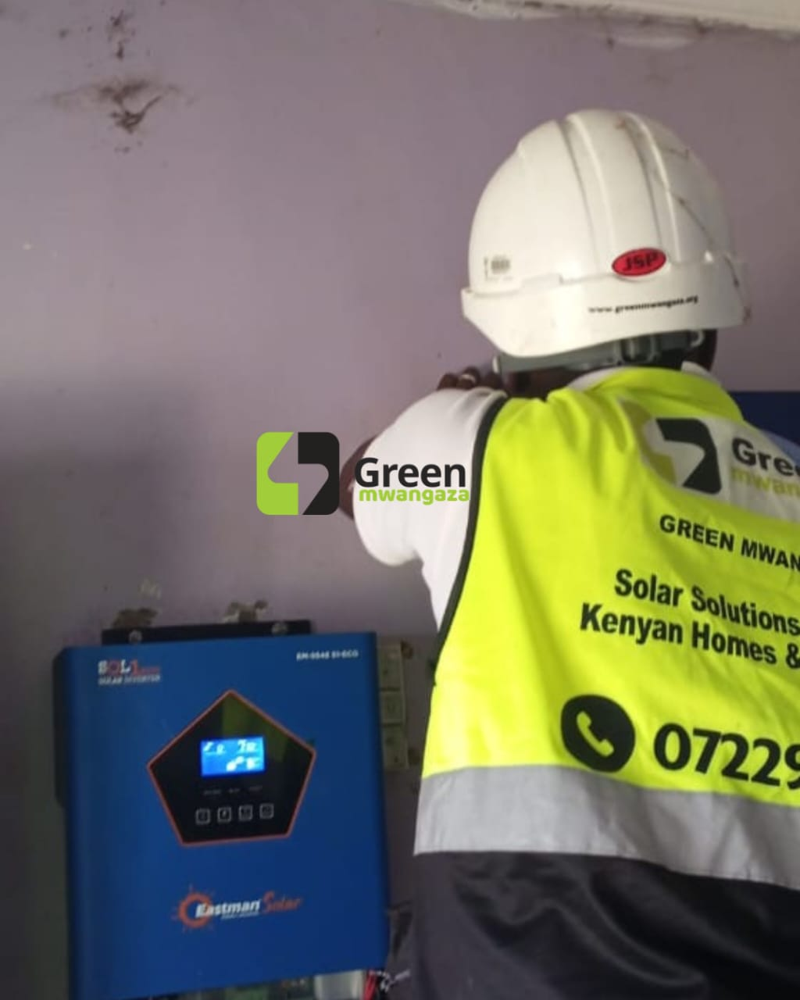
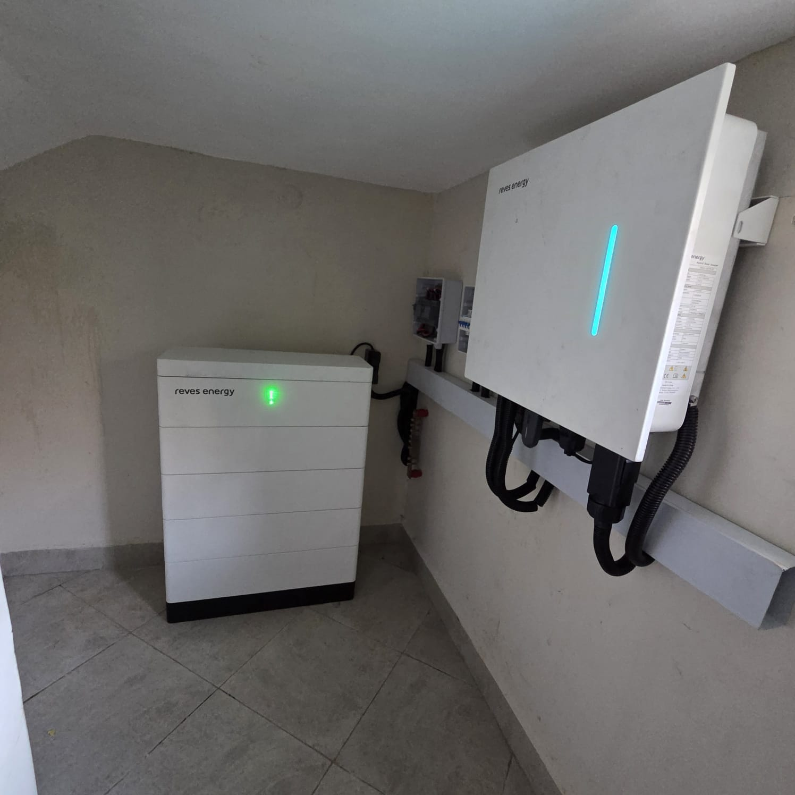

OUR STORY
Connecting People, Enterprise & Opportunity
We bring businesses, producers, partners and communities together to turn ideas into practical action and shared opportunity.
Discover Our Story →OUR PROJECTS & PROGRAMMES
Real solutions. Lasting impact.
WHERE WE WORK
We develop and support collaborative programmes that respond to local needs, build capacity and connect people to economic opportunity. The themes below represent our areas of focus.

OUR STORY
We bring businesses, producers, partners and communities together to turn ideas into practical action and shared opportunity.
Discover Our Story →
Supporting producers and agribusinesses with practical market linkages, value addition and skills.
Enquire about this theme →
Coordinating partners, sourcing and delivery support for resilient community infrastructure.
Enquire about this theme →
Exploring renewable energy opportunities that support reliable and sustainable access to power.
Enquire about this theme →
Building capabilities and connections that help people participate in local economic activity.
Enquire about this theme →
Connecting organisations and communities with useful digital services, tools and skills.
Enquire about this theme →Bringing enterprises, institutions and development partners together around shared goals.
Enquire about this theme →These are programme themes, not claims of completed projects. Get in touch to discuss current opportunities and collaborations.
We welcome practical ideas and partnerships that create shared value.